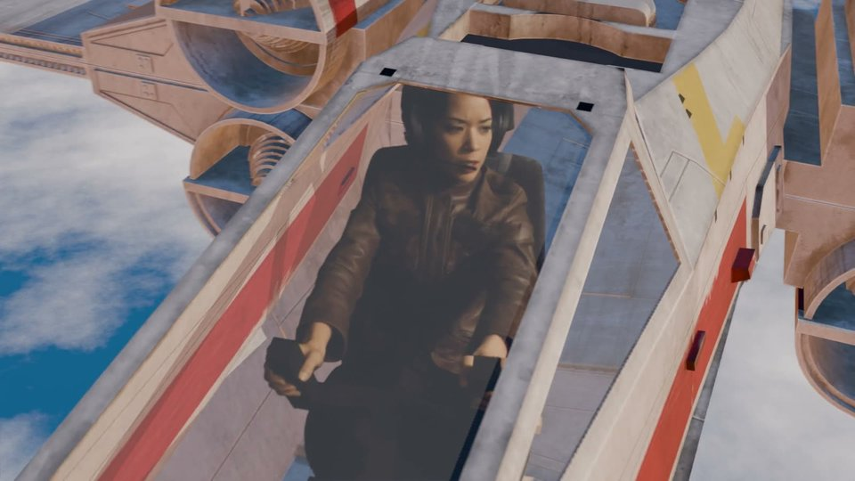
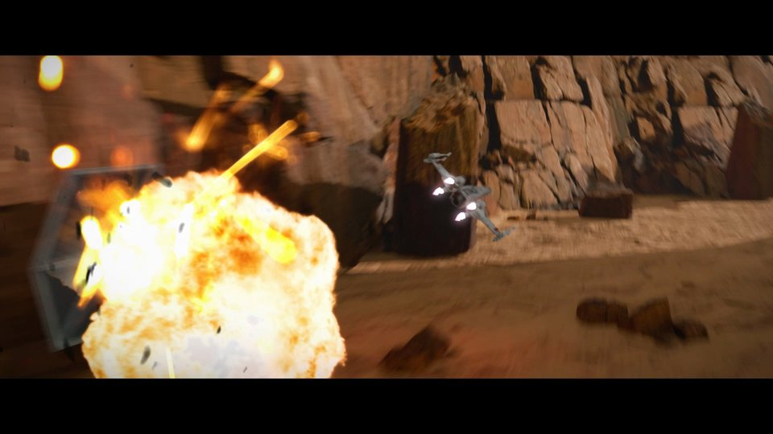
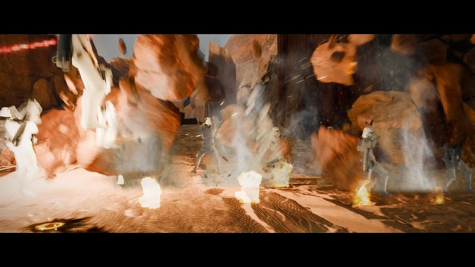

Rescue Run
A 30-second film in six shots, all in one world. Everyone builds the core shot and the edit. Then each group takes one more shot, and the class cuts them into one film.
- Core: Canyon Dogfight, then The Cut.
- Your group’s shot: pick one of the others.
- Every workbook starts with a short theory deck and ends with a director’s change you solve on your own.
Lake Skim
Four X-wings low over the water with spray trails. Formation paths, water and particles.
Being built

Pilot in an X-wing
Track a real camera, key a pilot off a green screen and seat her in the fighter.
Ready · canyon version in the rough cut

Canyon Dogfight
A chase down a canyon on one path, lasers, a kill, then haze, glow and real fire in After Effects.
Ready · three cameras

Strafing Run
A character from Sketchfab, animated with Mixamo, a squad behind a barricade, and a strafing pass that blows it apart.
Ready
Through the Clouds
Pull up out of the canyon and punch through a cloud layer into the sun.
Being built
The Cut
Edit the shots into one film with sound and titles.
Being built